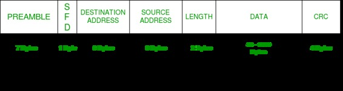
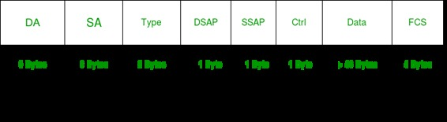

Prerequisite – Introduction to Ethernet
Basic frame format which is required for all MAC implementation is defined in IEEE 802.3 standard. Though several optional formats are being used to extend the protocol’s basic capability.
Ethernet frame starts with Preamble and SFD, both works at physical layer. Ethernet header contains both Source and Destination MAC address, after which the payload of frame is present. The last field is CRC which is used to detect the error. Now, let’s study each field of basic frame format.
Ethernet (IEEE 802.3) Frame Format –

- PREAMBLE – Ethernet frame starts with 7-Bytes Preamble. This is pattern of alternative 0’s and 1’s which indicates starting of the frame and allow sender and receiver to establish bit synchronization. Initially, PRE (Preamble) was introduced to allow for the loss of few bits due to signal delays. But todays high-speed Ethernet don’t need Preamble to protect the frame bits.
PRE (Preamble) indicates the receiver that frame is coming and allow the receiver to lock onto the data stream before the actual frame begins. - Start of frame delimiter (SFD) – This is a 1-Byte field which is always set to 10101011. SFD indicates that upcoming bits are starting of frame, which is destination address. Sometimes SFD is considered the part of PRE, this is the reason Preamble is described as 8 Bytes in many places.
- Destination Address – This is 6-Byte field which contains the MAC address of machine for which data is destined.
- Source Address – This is a 6-Byte field which contains the MAC address of source machine. As Source Address is always an individual address (Unicast), the least significant bit of first byte is always 0.
- Length – Length is a 2-Byte field, which indicates the length of entire Ethernet frame. This 16-bit field can hold the length value between 0 to 65534, but length can not be larger than 1500 because of some own limitations of Ethernet.
- Data – This is the place where actual data is inserted, also known as Payload. Both IP header and data will be inserted here, if Internet Protocol is used over Ethernet. The maximum data present may be as long as 1500 Bytes. In case data length is less than minimum length i.e. 46 bytes, then padding 0’s is added to meet the minimum possible length.
- Cyclic Redundancy Check (CRC) – CRC is 4 Byte field. This field contains 32-bits hash code of data, which is generated over Destination Address, Source Address, Length and Data field. If the checksum computed by destination is not same as sent checksum value, data received is corrupted.
Note – Size of frame of Ethernet IEEE 802.3 varies 64 bytes to 1518 bytes including data length (46 to 1500 bytes).
Brief overview on Extended Ethernet Frame (Ethernet II Frame) :
Standard IEEE 802.3 basic frame format is discussed above in detail. Now let’s see the extended Ethernet frame header, using which we can get Payload even larger than 1500 Bytes.

DA [Destination MAC Address] : 6 bytes
SA [Source MAC Address] : 6 bytes
Type [0x8870 (Ethertype)] : 2 bytes
DSAP [802.2 Destination Service Access Point] : 1 byte
SSAP [802.2 Source Service Access Point] : 1 byte
Ctrl [802.2 Control Field] : 1 byte
Data [Protocol Data] : > 46 bytes
FCS [Frame Checksum] : 4 bytes
Although length field is missing in Ethernet II frame, the frame length is known by virtue of the frame being accepted by the network interface.
GATE CS Corner Questions
Practicing the following questions will help you test your knowledge. All questions have been asked in GATE in previous years or in GATE Mock Tests. It is highly recommended that you practice them.
- GATE CS 2007, Question 85
- GATE CS 2005, Question 74
- GATE CS 2004, Question 90
- GATE IT 2005, Question 27
- GATE CS 2016 (Set 2), Question 34
References –
Extended Ethernet Frame Size Support
ciscopress
IEEE 802.3 and Ethernet